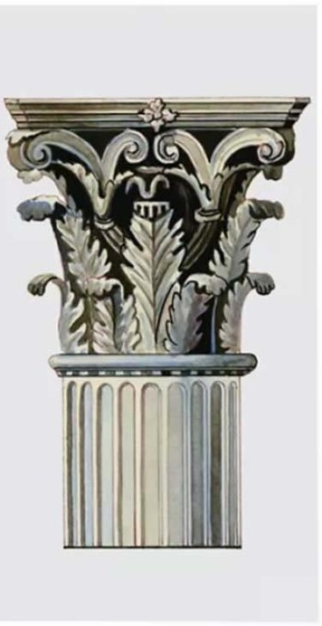
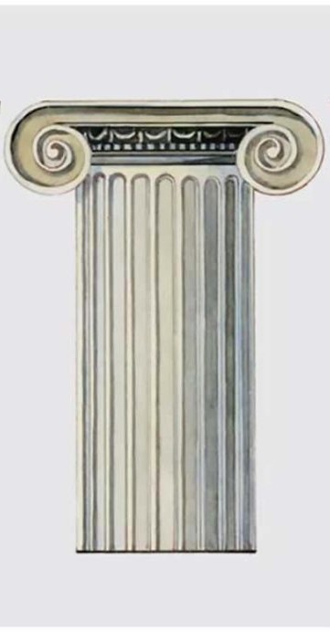
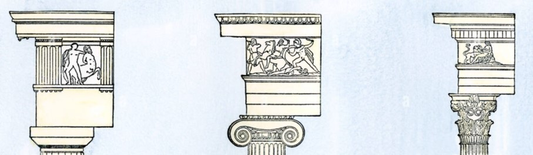
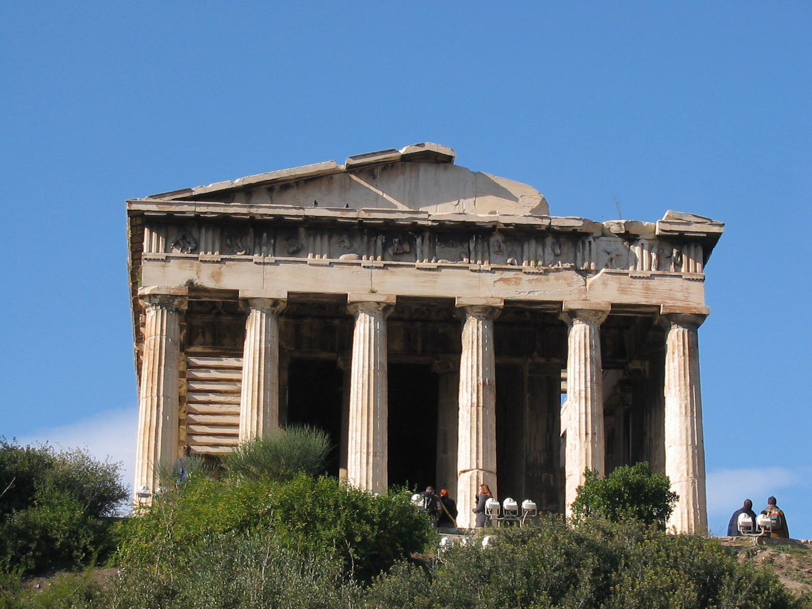
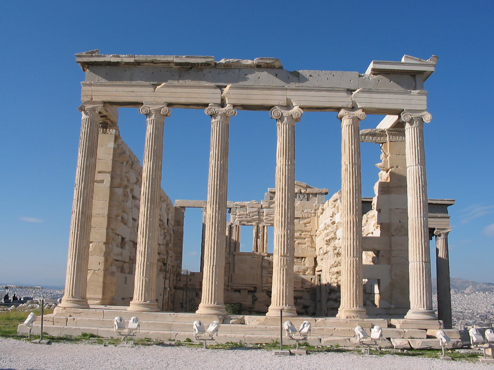

LES ORDRES DES TEMPLES
Vous souvenez-vous de ce qu’est un ordre ?
Reconnaissez-vous l’ordre des colonnes du temple qui se trouve devant vous ?
Reconnaissez-vous l’ordre des colonnes du temple qui se trouve devant vous ?

Reconnaissez-vous l’ordre des colonnes du temple qui se trouve devant vous ?

Le sommet des colonnes n’est pas le seul élément qui différencie l’ordre dorique, de l’ordre ionique et de l’ordre corinthien. Par exemple, la frise d’un temple dorique est une succession de métopes et de triglyphes, tandis que l’ordre ionique ou corinthien présente un bas-relief continu.

D’après toi de quel ordre est ce temple de Poséidon ?

D’après vous, de quel ordre est ce temple d’Athéna ?
